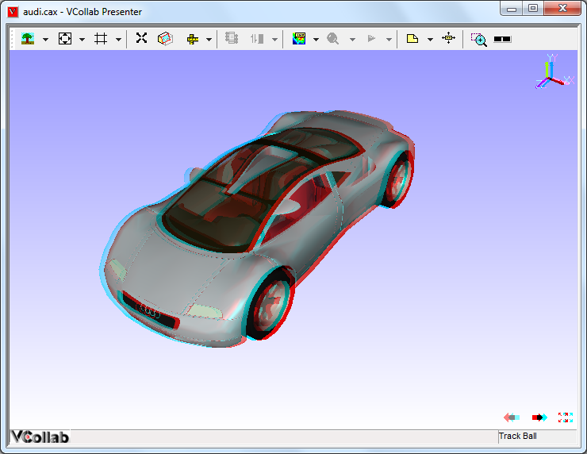
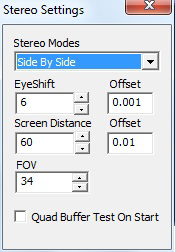
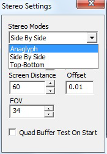

Stereo
This option is used to enhance 3-Dimensional perception of an image and is enabled only when you have a graphic card that supports stereo mode.
Besides the graphics card you will need synchronized monitors or special glasses to alternate the view between frames.
Types
- Quad Buffer Stereo
- Anaglyph
Top-Bottom and Left-Right
Top-Bottom and Left-Right are used in gaming hardware that supports passive stereo. Compared to Active stereo it is an economical solution but with half of resolution loss.
To use 3D TV/Monitor in side by side mode is very simple, just connect 3d monitor and set side by side option in VCollab Pro and in TV/monitor.
Hardware Requirements:
- Passive circular polarized stereo monitor.
- Circular polarized stereo eye ware.
Anaglyph Stereo
- This is low cost stereo solution along with color loss.
- User needs Anaglyph stereo glasses to view the 3-Dimensional model.
- Pressing down the key ‘A’ toggles between enabling and disabling Anaglyph stereo mode.
Required Hardware
Red-Blue or Red-Green or Red-Cyan passive color glasses.
Anaglyph Stereo Image

Quad Buffer Stereo
This is the recommended mode for engineering solutions with full resolution.
User needs Active Shutter glasses to view 3-Dimensional model.
User can increase or decrease eye shift value.
Pressing ‘Q’ key down toggles between enabling and disabling Quad buffer stereo.
Note: If environment variable VCOLLAB_FORCE_STEREO is set as TRUE, It will not check for stereo while starting VCollab Pro. It assumes GPU has Quad Buffer stereo.
Warning: If GPU doesn’t have QuadBuffer in OpenGL driver, setting the above environment variable will lead to application crash on start. Removing that environment variable will avoid crash.
Hardware Required :
OpenGL Quad Buffer Supported Stereo Card.
For More Hardware Vendor specific Info http://www.nvidia.com/object/quadro_stereo_technology.html http://www.nvidia.com/object/quadro_pro_graphics_boards.html Other than nVidia, AMD also makes 3 pin din stereo cards.
- ATI Radeon|reg| HD 5000 series GPUs
- AMD Radeon|reg| HD 6000 series GPUs
- AMD Radeon|reg| HD 7000 series GPUs
- AMD A-Series APUs
120Hz Supported Monitor/Projector Here it is listed some monitors http://www.pymolwiki.org/index.php/Stereo_3D_Display_Options http://www.blurbusters.com/faq/120hz-monitors/
LCD Shutter Stereo Glass And Stereo Emitter. 3D Stereo Emitter that to be connected externally with the gpu. http://www.nvidia.com/object/product-geforce-3d-vision2-wireless-glasses-kit-us.html
Stereo Settings

Stereo Modes Sets specified stereo mode Eye Shift Approximate distance between viewers eye ball in centimeters. Screen Distance Approximate distance between viewer and screen in centimeters. FOV Viewing angle 50 to 70 degree is recommended. Quad Buffer Test On Start If checked, On next session of VCollabPro execution, it will test GPU for Quad Buffer Support. If GPU supports Quad buffer, Then VCollab Stereo mode lists Quad Buffer Stereo mode along with othere stereo modes.
Note:
This version of VCollab Pro supports only single channel stereo. Some 3D DLP (Digital Light Processing) projectors does not support single channel Stereo 3D. It expects Left and right images on two independent windows, and connects them with 2 output cable from GPU. But now current version of VCollab outputs left and right images in same window.
Stereo Modes
- Active
- Quad Buffer
- Passive
- Side By Side (Left-Right)
- Top-Bottom
- Anaglyph

Anaglyph Passive stereo for red and cyan glass glasses is required.
It can be viewed in any monitor.
Side By Side Passive Stereo in Left Right format. Passive stereo glasses and 3D monitor/3D TV are required. Top - Bottom Passive Stereo in Top-Bottom format. Passive stereo glasses and 3D monitor/3D TV are required. Quad Buffer Active Stereo. Requires OpenGL Quad buffer supported graphics card, active stereo glasses with emitter. Also requires 120hz refresh rate supported display system (monitor/projector)
- Click ‘Edit | Stereo Settings’.
- It pops up ‘Stereo Settings’ dialog.
- Edit or utilize the arrow buttons to increase or decrease the eye shift values.
- User can use the keys ‘+’ to increase and ‘-‘ to decrease the eye shift values.
Stereo Support in Desktop
Quad Buffer Side by Side / Top-Bottom Anaglyph Special GPU Required with quad buffer support Not required Not required Refresh Rate of Monitor 120Hz 60Hz(regular) 60Hz(regular) Eyeware LCD Shutter Glass Polarized Glass Red-Blue/Red-Gr een/Red-Cyan Emitter Required Not Required Not Required Visual Quality High, Used in engineering solutions Medium, Used in entertainment Color loss, Used in paper medium Resolution in Full HD Monitor Outputs in Full HD resolution Half resolution is lost Full resolution Filter in monitor No filter is needed Polarized filter comes along with monitor No filter needed Minimum cost for Hardware ~$1000 ~$500 ~$1
Stereo Support in 3D TV
- Current 3D TVs that are available in market, some TVs that support stereo in active mode and some in passive mode.
- VCollabPro will work on both, using Top-Bottom or Left-Right (side By side) mode. No Quad buffer GPU is needed in laptop or desktop.
- UHD is recommended. Even it losses half resolution, 2K in each frame is good enough to get good visualization
Active Stereo TV Passive Stereo TV Eyeware LCD shutter glass Polarized glass VCollab Pro Stereo Mode T-B / L-R T-B /L-R Quad buffer Stereo card in Laptop/Desktop Not required Not Required Screen Sharing through WiDi Will support Will Support Display connected thru HDMI Will support Will Support
Stereo Support in Projectors
- Traditional Projectors with external emitter
- Built in Emitters
- Duel Projectors
External Built In Dual Projector Refresh Rate Required 120 Hz 120 Hz 60 Hz VCollab Pro Stereo Mode Quad Buffer Quad Buffer/L-R/T-B L-R/T-B Emitter Need to be purchased Built In Can support passive using polarized filters Eyeware Shutter Glass Shutter Glass Polarized Glass